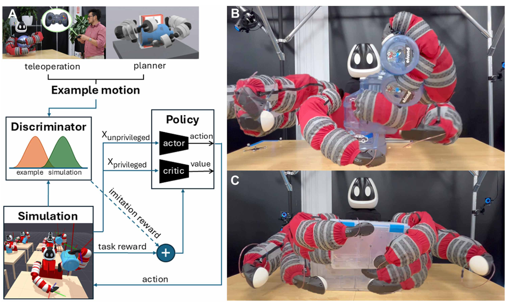
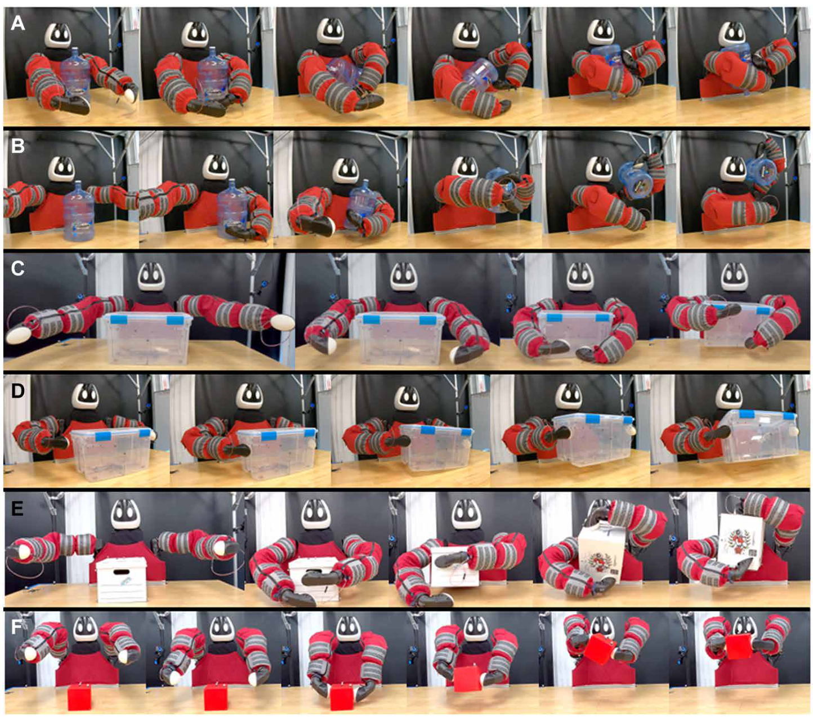
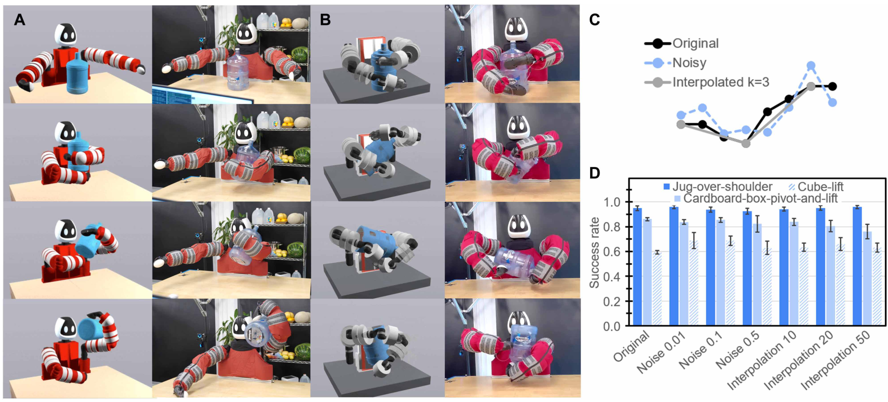
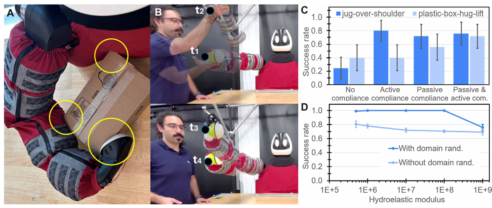
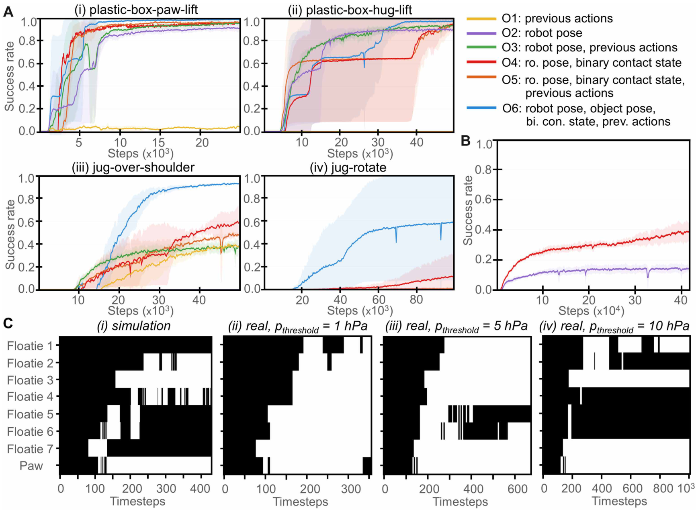

FIG. 1
从一条示例到可执行的反馈策略
这张图交代系统分工：示例给出动作风格，强化学习寻找能完成任务的动作，柔顺身体帮助落地。

Punyo 把柔顺身体、示例引导强化学习和触觉反馈组合起来，在仿真中练习后完成真实的大物体操作。最值得借鉴的是把感知直接接入策略、用实机消融检验身体柔顺性的作用，以及在部署时去掉部分训练特权信息。
阅读依据：用户提供的 14 页出版社排版正文 R08.pdf，覆盖 Fig. 1–5、Methods 与 Discussion。本页未独立核验补充材料及影片，因此不补写表 S1–S9 的物体质量、完整网络结构或成功判据数值。原始 PDF 不随网页公开上传。
论文解决的是多处接触不断切换时，机器人如何稳定操作大物体。作者用一条示例限制探索方向，用任务奖励纠正示例的不完美，再利用柔顺身体缓冲模型误差。贡献主要体现在系统组合、真实操作与消融证据；AMP、PPO 和非对称 actor–critic 本身来自已有方法。
这张图交代系统分工：示例给出动作风格，强化学习寻找能完成任务的动作，柔顺身体帮助落地。

逐行从左到右观察物体与双臂、躯干的接触变化。六行对应六个分别训练的任务策略。

作者既比较示例来源，又人为破坏示例质量，检查学习是否过度依赖精确轨迹。

软表面改变接触本身，关节导纳控制则让机器人在受力时让步；两者是不同机制。

这是理解“感知—反馈—学习”关系最关键的图：删掉物体跟踪信息后，哪些传感输入仍能支持动作？

这项工作说明，大物体操作不必把所有接触都精确规划清楚：一条示例给学习过程提供方向，柔顺身体吸收部分接触误差，触觉则补充控制所需的信息。最强证据来自真实操作和柔顺性消融；最主要边界是逐任务训练、有限盲操作能力，以及依赖仿真建模。